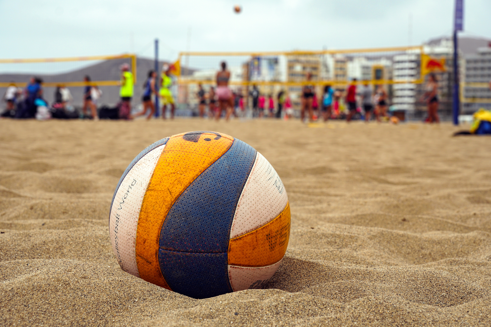

Uno scatto di Samuele Cottafava,
attualmente il miglior giocatore italiano
| Posizione | Giocatori | Nazionalità | Punteggio | |
|---|---|---|---|---|
| 1° | Åhman D./Hellvig J. | Svezia | 8020 | Maggiori informazioni sui due geni del beachvolley |
| 2° | Cottafava S./Dal Corso G. | Italia | 6040 | |
| 3° | Mol A./Sorum C. | Norvegia | 5900 | |
| 4° | George W./Andre S. | Brasile | 5750 | |
| 5° | Perusic O./Schweiner D. | Repubblica Ceca | 5600 | |
| 6° | Ehlers C./Wickler C. | Germania | 5450 | |
| 7° | Boermans S./De Groot Y. | Paesi Bassi | 5200 | |
| 8° | Evandro G./Arthur L. | Brasile | 4950 | |
| 9° | Partain M./Benesh A. | Stati Uniti | 4800 | |
| 10° | Cherif Y./Ahmed T. | Qatar | 4650 |

Uno scatto di Samuele Cottafava,
attualmente il miglior giocatore italiano